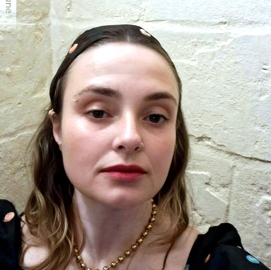
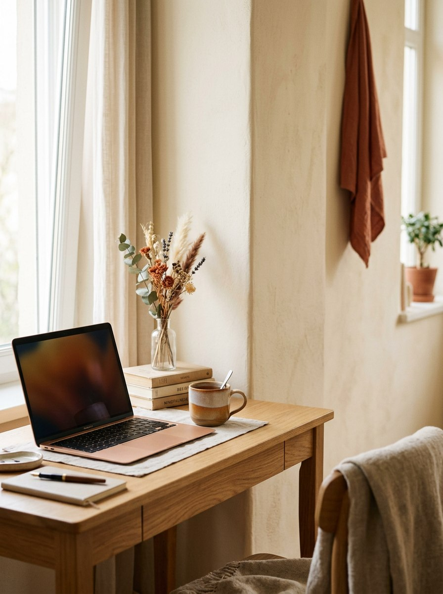

Marketing Digital & Social Media
Gestão de redes sociais, Paid Media, produção de conteúdo e análise de resultados: tudo o que uma marca precisa para crescer online.
Sou a Dionísia Pereira, comunicadora, consultora de marketing e coach. Ajudo marcas e pessoas a comunicar com mais clareza, mais alma e mais resultados. Atualmente disponível para colaborações remotas, em regime part-time e horário flexível.

Comunicadora nata e apaixonada por palavras, ideias e pessoas. Assim me defino depois de duas décadas dedicadas à Comunicação e ao Marketing.
Ao longo do meu percurso destaquei-me pela liderança de equipas, pela criatividade estratégica e pela empatia no relacionamento interpessoal, seja a dirigir a comunicação de uma marca, a organizar um evento internacional ou a escrever o texto certo para o momento certo.
Nos últimos anos abracei o coaching e a formação como extensão natural da minha vocação: ajudar os outros a crescer, a alinhar-se com o seu propósito e a viver com mais bem-estar. Sou uma profissional versátil, positiva e resiliente, com forte capacidade de adaptação e uma visão holística de cada projeto.
Hoje, concilio várias colaborações remotas e part-time em simultâneo, a prova viva de que consigo entregar valor real com autonomia, flexibilidade e organização, esteja eu onde estiver.
Do primeiro rascunho à última métrica, apoio marcas, negócios e pessoas com o mesmo cuidado, esteja eu na sua equipa a tempo parcial ou como consultora externa.
Gestão de redes sociais, Paid Media, produção de conteúdo e análise de resultados: tudo o que uma marca precisa para crescer online.
Textos que vendem e marcas com voz própria: copywriting, guiões, branding e storytelling para todos os pontos de contacto.
Sessões 1:1 ou em grupo, mentoria entre pares e facilitação de workshops, para equipas e pessoas que querem crescer com propósito.
Formadora certificada, com experiência em marketing digital, comunicação empresarial e desenvolvimento pessoal.
Planos de comunicação, relações públicas e organização de eventos, com feiras e congressos internacionais já no currículo.
Gestão de hospitalidade e experiências memoráveis, com foco na satisfação e na fidelização.
“Ajudar os outros a crescer, a alinhar-se com o seu propósito e a viver com mais bem-estar, essa é a missão que carrego em cada projeto.” Dionísia Pereira
Hoje concilio, com sucesso, várias colaborações remotas em simultâneo, a experiência mais concreta de que a flexibilidade não custa qualidade.
Gestão de hospitalidade dinâmica focada em elevar a satisfação dos hóspedes; operações eficientes e cultura de serviço personalizada; liderança de equipas de alto desempenho.
Produção de conteúdos e gestão de social media e Paid Media; desenvolvimento de estratégias de comunicação e marketing digital.
Gestão de comunidade online, análise de marketing digital, coaching entre pares, mentoria em bem-estar e facilitação de grupos de estudo.
Desenvolvimento de estratégias de comunicação e marketing, gestão de redes sociais, relações públicas, copywriting e storytelling de marca.
Direção estratégica e criativa da marca; organização de eventos internacionais, feiras e congressos; coordenação de lojas e vitrinismo; copywriting.
Direção de marketing e comunicação estratégica; execução do plano de comunicação e marketing; organização de eventos.

Percurso sólido em marcas nacionais e internacionais, da direção de marketing ao coaching.
Concilio com sucesso várias colaborações part-time: autonomia e organização comprovadas todos os dias.
Português, inglês e francês fluentes, espanhol avançado: pronta para equipas e clientes internacionais.
Social Media, Paid Media, Photoshop, Illustrator, InDesign e WordPress: sem curva de aprendizagem.
Comunicação clara e cumprimento de prazos, com a mesma exigência de quando lidero uma equipa inteira.
Junto a criatividade estratégica à empatia e ao coaching: para pensar cada projeto como um todo.
Se procura alguém com experiência comprovada, criatividade e a flexibilidade de um regime part-time remoto, escreva-me. Respondo com todo o gosto.